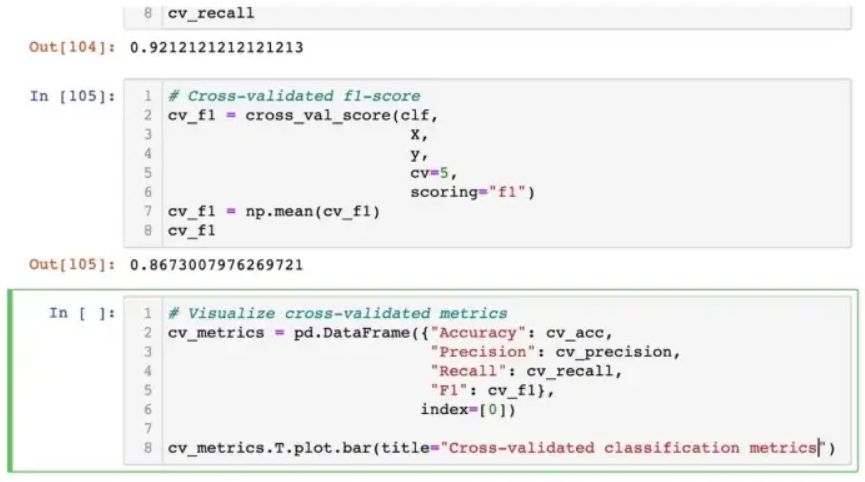
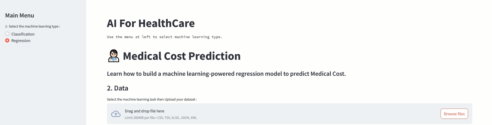
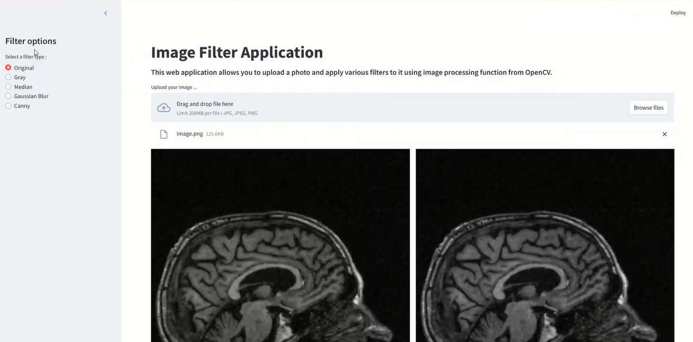
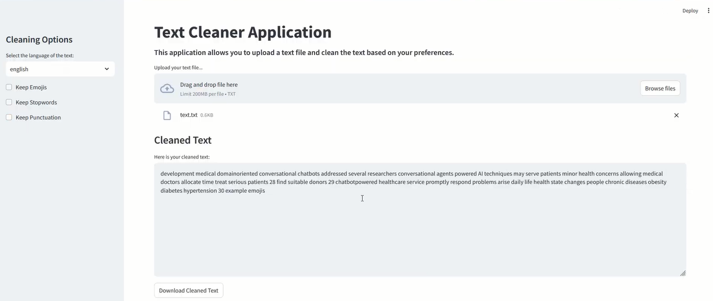

What I learned
formation taken with Limitless Learning
AI in healthcare refers to the use of machine learning, natural language processing, deep learning and other AI technologies to enhance the experiences of both healthcare professionals and patients. The data-processing and predictive capabilities of AI enable health professionals to better manage their resources and take a more proactive approach to various aspects of healthcare.
- Exploratory Data Analysis On HealthCare Tabular Data
- Machine learning for HealthCare
- Explainable AI for Healthcare
- Supervised and Unsupervised Learning
- Medical Imaging
- Deep Learning For medical Imaging
- Image Segmentation For Medical Imaging
- DNA Sequence Analysis in Python
- Natural Language Processing for Healthcare
- Learn how to create interactive and automated data-oriented medical web applications
What I built
-

Heart Disease Detector
Learn how to build a machine learning-powered classification model to predict whether a patient has heart disease or not based on their health parameters and heart measurements.
Demo -

Medical Cost Prediction
Learn how to build a machine learning-powered regression model to predict Medical Cost and know how few features determine our insurance amount.
Demo -

Image Filtering & Processing
Learn how to build a Streamlit application that allow users to seamlessly upload image files, and interact with dynamic filter controls.
Demo -

Text Cleaner
Learn how to build a Text Cleaning App with Streamlit Python & NeatText.
Demo